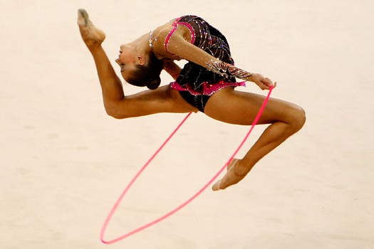
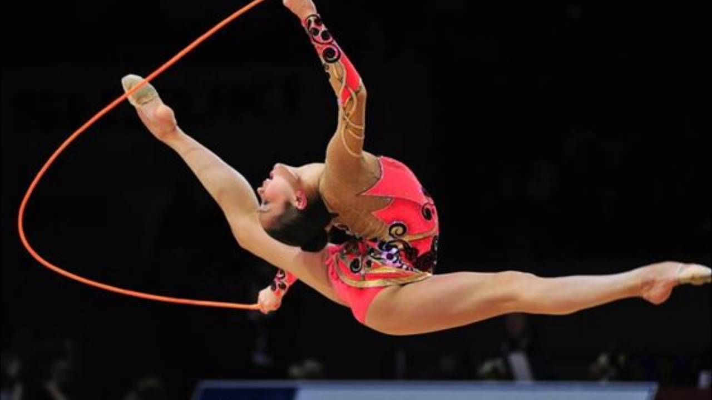

Художественная гимнастика
Скакалка
Скакалка— Скакалка используется как один из предметов в художественной гимнастике.
Гимнастическая скакалка не имеет ручек, вместо них разрешается завязывать узел или обжигать края. Внешне похожа на верёвку.Основные требования к скакалке включают прыжки и прыжки вприпрыжку.
К другим элементам относятся броски, круги, вращения и восьмерки.

